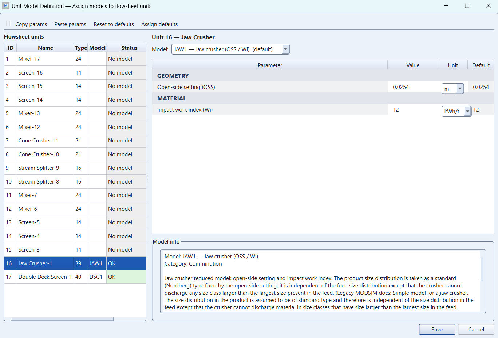
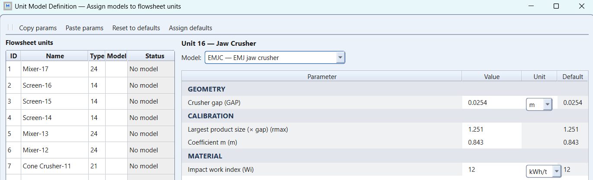
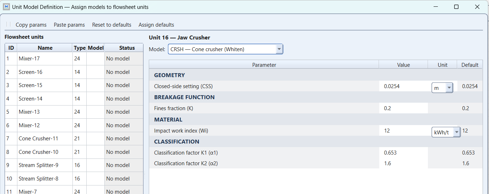
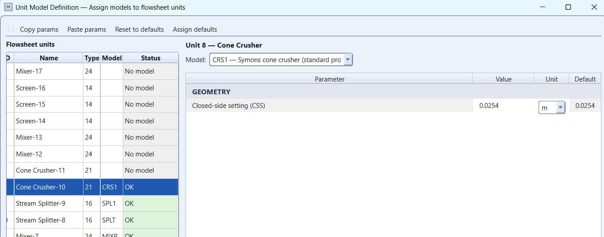
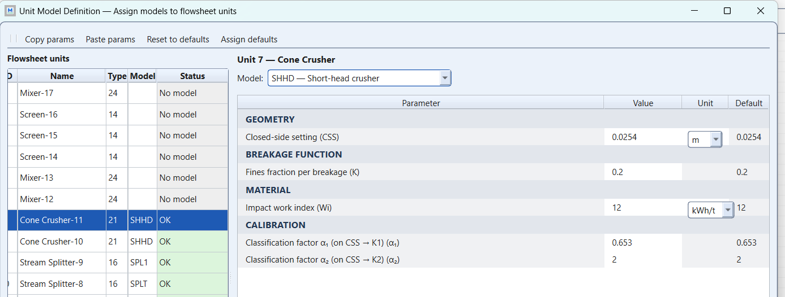

Exercise 3: comparison of crusher models
module 2 · King 5.1-5.6 (Tables 5.3-5.7)
Read in King: King 5.1–5.6 · Fracture of brittle materials · p. 119
The exercise sheet and the worked files live on the PC copy of Malla; the sheet's numbers are transcribed in this guide.
On this page
What they ask
Build a test rig, not a plant: one common feed, split into as many parallel lines as there are crusher models for a machine type, one model per line, every other setting identical. Then compare the products.
- Feed: Kiruna D-ore, 4.0 t/m³, 100 t/h per machine, size distribution RRS with mm and , ten fractions.
- Annotate the model name beside each machine; fly-outs on the feed and on every product.
- Jaw crushers first, all at OSS 50 mm: plot feed and products in one particle-size diagram; then raise the feed rate by 50 % and see what changes.
- Repeat for gyratory crushers (OSS 50 mm), cone crushers (CSS 25 mm), roll crushers (CSS 25 mm) and high-pressure roller mills (CSS 25 mm).
How the work flows
The sheet's own word is test circuit: a measurement rig, not a plant. There is nothing to design and nothing to tune. For one family at a time you build the rig, give every line the same setting, run once, plot the feed and the products in one diagram, raise the feed by 50 %, run again, lay the second plot over the first, and write one sentence about what moved and what did not. Then the next family, from a copy of the file. The loop is over families, never over parameters.
- Fixed for every run: the material of 2.1 (Kiruna D-ore, 4.0 t/m³, RRS with mm and in ten fractions), 100 t/h per machine, the rig itself (one feed stream, one splitter at equal fractions, one crusher per model, one product stream per crusher), the model name beside each machine, the fly-outs on the feed and on every product, and one work index for the power estimate.
- Chosen once: which model codes make up each family, from the manual's chapter 7 list (jaw: JAW1, JAW2, EMJC, and CRSH read as a jaw; gyratory: GYRA, with CRSH again; cone: CRS1, CRSH, SHHD; rolls and high-pressure rolls: the codes MODSIM lists under the mill icons), and a size mesh that reaches about 500 mm at the top and a few millimetres at the bottom.
- Frozen per family: the setting the sheet fixes, on every line: OSS 50 mm for the jaws and the gyratories, CSS 25 mm for the cones, the rolls and the high-pressure rolls. Nothing is turned to make a curve look better: a moved knob would spoil the only thing the rig measures.
- Read at the end: one particle-size diagram per family with the feed and every product, the same diagram at +50 % laid over it, the power of each unit at both rates from its report, and one sentence per family.
In the sheet's own words, "construct a flowsheet" is the rig, "assume that the machines are run with OSS 50 mm" is the frozen setting, "plot" is the deliverable, "how do the particle size distributions change" is a question you answer by overlaying the two runs, and "do the same for" says that the loop is over families, not over parameters.
What you touch, read and wait for changes from one kind of run to the next:
| Run | What you change | What you read | When to stop |
|---|---|---|---|
| Base run, one family | Nothing yet: the rig with this family's models, the sheet's setting on every line, the splitter at equal fractions | The feed curve against the hand table (39.3 % at 50 mm, 63.2 % at 100 mm); one product curve per model, each with its code; the checks below | As soon as the plot has the feed and one curve per model |
| +50 % run, same family | Only the feed rate: 100 t/h per machine times 1.5, the splitter untouched | The same plot laid over the base run; the power of each unit in its report | As soon as you can say which curves moved (none should) and how the power moved |
| Next family | The models and the setting, in a copy of the file: GYRA at OSS 50 mm; CRS1, CRSH, SHHD at CSS 25 mm; the roll and high-pressure roll codes at CSS 25 mm | The same two plots for that family | After the fifth family: five PAKs, five plots, five overlays |
| Comparison | Nothing | The five diagrams side by side and the sensitivity table | When each family has its sentence and the worked PAKs on Canvas have been opened and compared with yours |
How to check a run
The sheet's success criterion is a plot that says something true about the models, so the checks are the numbers the models must reproduce, all from Before MODSIM:
- Standard-curve models (JAW1, JAW2, GYRA). The product's top size is mm and about 83 % of it is finer than the OSS. Read both from the product's PSD table or fly-out. A top size equal to the feed's means the setting was typed in the wrong unit (50 m instead of 0.050 m).
- Cycle models (CRSH, SHHD) at CSS 25 mm. Nothing coarser than leaves the machine (40 mm for CRSH, 50 mm for SHHD with the default ), the part of the feed finer than mm goes through unbroken, and the product curve lies above the feed curve at every size.
- The +50 % run. The curves are unchanged; the power in each unit report rises by about 50 %, because the power estimate scales with tonnage and none of these models has a capacity term. A curve that moved means a setting, a unit or a splitter fraction changed together with the feed: find it before writing a sentence about capacity.
- The rig itself. Equal splitter fractions (each product carries 100 t/h in the base run, 150 t/h at +50 %), the feed fly-out at the sum of the lines, one annotation per machine.
Why (the engineering)
The exercise sheet says it plainly: you will often have to choose between models you only partly understand. A parallel rig with identical data is the cleanest way to see what each model actually does with a setting, because the only thing that differs between lines is the model.
Two things to look for, both from the lecture slides and the MODSIM manual:
- Which setting drives the product. The primary-crusher models (JAW1, JAW2, GYRA) produce a standard size distribution scaled by the open-side setting and the material type; the feed size distribution does not enter at all (the product is only capped at the largest feed size). The secondary and tertiary models (CRSH, SHHD) run the crushing cycle: internal classification between and , then breakage with the two-term Whiten function, repeated until the material escapes. In the manual's notation (section 7.1.1) the classification function is
with below and above , and the breakage function is
where is the proportion of fines produced in each breakage event. CRS1 is the one-parameter Symons model for preliminary work.
- Whether the model knows about throughput. None of these crusher models carries a capacity term: a machine model happily "crushes" 150 t/h with the same product it gave at 100 t/h. That is exactly what the +50 % sensitivity is meant to show you. The capacity check is yours, against King's Tables 5.4 to 5.7, and Assignment 1 asks for it explicitly.
Before MODSIM: numbers by hand
The feed. Rosin-Rammler-Sperling (RRS): the cumulative fraction finer than is
With mm and the curve is simply :
| Size (mm) | Cum % finer |
|---|---|
| 10 | 9.5 |
| 25 | 22.1 |
| 50 | 39.3 |
| 100 | 63.2 |
| 200 | 86.5 |
| 300 | 95.0 |
| 460 | 99.0 |
So mm (solve ) and mm: your size classes must reach about 500 mm at the top and go down to a few millimetres so the cone products at CSS 25 mm have somewhere to land.
What the simple jaw and gyratory models will give. The standard curve (slide 21, Excel PrimCrushProd) is written in the reduced size ; the coarse end follows for . Two numbers fall out immediately: nothing coarser than mm leaves the machine, and about , that is 83 %, of the product is finer than the OSS itself. Write both down; they are your first check after the run.
What the cycle models will do at CSS 25 mm. With the CRSH defaults and , particles finer than mm pass the chamber unbroken, particles coarser than mm are always nipped, and the range between is shared according to the classification exponent . SHHD uses , so its "always broken" limit sits at 50 mm. is the fraction of fines produced per breakage event.
Here is the rig for the jaw family, the one you build first; the other families reuse it with the models and the setting swapped. Every product carries the code of the machine that made it, which is the annotation the sheet demands.
The models window
Exercise 3 is about what each model asks for, so the GUI's Unit Model Definition window is half the exercise: every crusher of the rig gets a different model, and the fields that appear when you pick it say what the product will depend on. The models as the window offers them (screenshots from the Assignment 1 circuit, same window):
- JAW1, jaw crusher (OSS / Wi), asks for two fields: the open-side setting and the impact work index. Its product is a standard curve hung on the OSS, the same whatever you feed it, except that nothing coarser than the feed's top size comes out; the work index only feeds the power. Type OSS 0.050 m and Wi 12 kWh/t.
- JAW2, jaw crusher (extended), asks for the same two fields. Same logic; what "extended" adds is in the window's help text: read it and quote it. Type the same two values.
- EMJC, EMJ jaw crusher, asks for the crusher gap, the largest product size as a multiple of the gap (rmax, default 1.251), the coefficient m (default 0.843) and the work index. Its product's top size is rmax × gap and m shapes the curve; move either and the curve moves. Type gap 0.050 m, the defaults for rmax and m, Wi 12.
- CRSH, cone crusher (Whiten), is offered for the jaw unit too and asks for a closed-side setting, the fines fraction K, the work index and the classification factors α₁ and α₂. Whiten's cycle: particles below α₁ × setting pass unbroken, particles above α₂ × setting always break, and the breakage function with fines fraction K makes the product; the feed's size distribution now matters. Type setting 0.050 m (read as the jaw's setting, and say so), K 0.2, Wi 12, α₁ 0.653, α₂ 1.6.
- CRS1, Symons cone crusher (standard product), asks for the closed-side setting only. A standard curve hung on the CSS, the cone's JAW1; no work index, so no power. Type the family's setting.
- SHHD, short-head crusher, asks for the CSS, K, the work index, α₁ and α₂ (default 2). Whiten's cycle with the short head's classification. Type as for CRSH, with α₂ 2.
- GYRA, gyratory crusher: not in the screenshots. Capture the window when you build the gyratory family. A standard curve hung on the OSS, like JAW1; type OSS 0.050 m.





The sentence the exercise is after is in this table before you run: with the same setting, the standard-curve models (JAW1, GYRA, CRS1) give the same product whatever you feed them, while the cycle models (CRSH, SHHD) and EMJC move with the feed. None of them has a capacity term; whether a real machine of that size takes 100 t/h is King's tables, read as in Reading a machine table, step by step.
Step by step in MODSIM
Set up ONE family (the jaw crushers) completely, save it, then copy the flowsheet for the next family and only swap models and settings.
New job, dry, no minerals, size classes 1 to 500 mm
File > New job. System data: dry process, no minerals. Size classes: top size 500 mm, root-two series down to about 1 mmFeed: 100 t/h per machine, RRS 100 mm, 1
Feed stream > solids flow (100 t/h times the number of lines) > density 4.0 > size distribution as cumulative % finer at your class sizesDraw the rig: feed, splitter, one crusher per model, one product each
Feed > Splitter. Splitter > JAW1, JAW2, EMJC, CRSH (as many lines as models). Each crusher > its own product stream, annotated with the model nameGive every jaw model OSS 50 mm and the same work index
JAW1 and JAW2: open-side setting 0.050 m, impact work index 12 kWh/t. EMJC: crusher gap 0.050 m, defaults for r_max and m. CRSH: setting 0.050 m (read as OSS for jaw duty), K 0.2, Wi 12, alpha1 0.653, alpha2 1.6Run, then plot feed and all products in one size diagram
Run. Graphs > particle size distributions > select the feed and every product stream. Export the plotSensitivity: feed +50 %, run again, overlay
Feed stream > solids flow times 1.5. Run. Same plotSave as PAK, then repeat for the other families
Pack the job as Ex3_jaw.PAK. Copy the flowsheet; swap models and settings: GYRA and CRSH at OSS 50 mm; CRS1, CRSH, SHHD at CSS 25 mm; the roll-crusher and HPGR models MODSIM lists under the mill icons, at CSS 25 mmExpected results
| Family and setting | What the curves should show | First check |
|---|---|---|
| Jaw, OSS 50 mm: JAW1, JAW2, EMJC, CRSH | Standard curves capped at mm; about 83 % finer than 50 mm; EMJC a smooth power law from the gap; CRSH a two-part curve with more fines | Top size of the JAW1 product = 62.5 mm |
| Gyratory, OSS 50 mm: GYRA (+ CRSH) | Same family as the jaws; GYRA adds the ore-type choice (brittle, tough, slabby, spongy) | Changing ore type moves the curve; changing feed does not |
| Cone, CSS 25 mm: CRS1, CRSH, SHHD | CRS1 a fixed standard curve from the CSS; CRSH and SHHD show the cycle: little change below 16 mm, everything above 40 mm (CRSH) or 50 mm (SHHD) broken | Products noticeably finer than the primary family |
| Rolls and HPGR, CSS 25 mm | Narrower distributions than cones; the HPGR model the narrowest | Compare against the two worked PAKs |
| +50 % feed, every family | Curves unchanged; unit power up by about 50 % | If nothing moved, you understood the exercise |
Common mistakes
Also: unequal splitter fractions; comparing plots with different axis ranges; forgetting the +50 % overlay; a size mesh that stops above the CSS; product streams without annotation (the sheet demands the model name beside each machine); and drawing conclusions about capacity from a model that has no capacity term.
- Believing a curve moved at +50 % before checking the setting. These models have no capacity term, so a product curve that changed with the feed rate means something else changed with it: a setting re-typed in the wrong unit, a splitter fraction, a different size mesh in the copy. Find it, then write the sentence; the first overlay is a check of the rig, not a result about the machine.
Sensitivity analysis
For each family fill one table, base case against +50 %:
| Model | of the product: base / +50 % | % finer than the setting: base / +50 % | Power kW: base / +50 % |
|---|---|---|---|
| JAW1 | … / … | … / … | … / … |
| JAW2 | … / … | … / … | … / … |
| EMJC | … / … | … / … | … / … |
| CRSH | … / … | … / … | … / … |
The honest sentence for the seminar reads: the product distributions did not respond to throughput because these models describe the shape of the product, not the machine's capacity; the power estimate scales with tonnage through the Bond-type relation MODSIM uses for crushers (slide 18); capacity has to be checked against manufacturer data such as King's Tables 5.4 to 5.7.